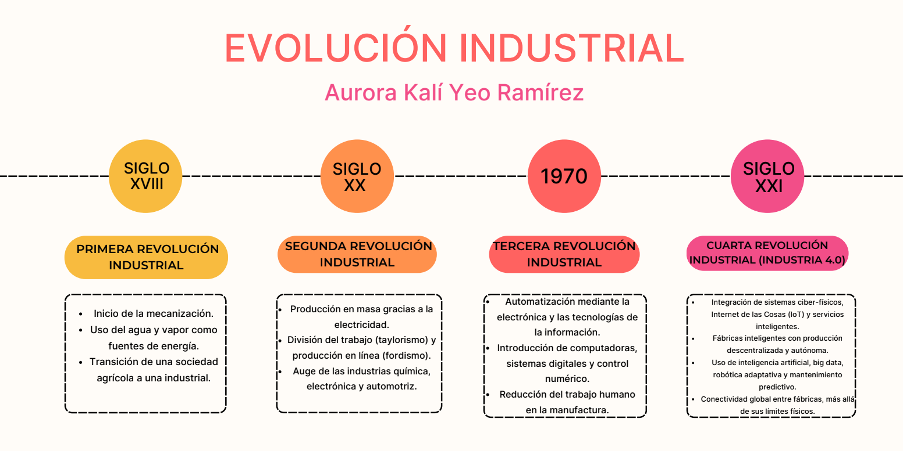

Evolución de la Industrialización

- Primera Revolución Industrial. Comienza con la introducción de equipos mecánicos en la
manufactura al final del siglo XVIII. Las máquinas y los motores revolucionaron la forma en que
los bienes eran producidos. La sociedad pasó de ser una sociedad agrícola a ser una sociedad
industrial.
- Segunda Revolución Industrial. Comenzó
a principios del siglo XX e involucró la producción en masa de bienes usando electricidad y
basada en la división del trabajo. Esta revolución se caracterizó por cambios organizacionales
como la implementación de la producción en línea (fordismo) y la administración científica de
procedimientos (taylorismo). La producción en masa aumentó y procedió en las industrias
química, electrónica y automotriz.
- Tercera Revolución Industrial. Comenzó en los años 70 y continúa hasta hoy. La tercera revolución se
caracteriza por la implementación de la electrónica y de las tecnologías de la información para
la automatización de los procesos de manufactura, lo que permite el gradual remplazo del
trabajo humano.
- Cuarta Revolución Industrial. Está marcada por una integración técnica de sistemas ciber físicos
en los procesos de logística y manufactura, así como también por el uso del internet de las
cosas y de los servicios en los procesos industriales. Las nuevas tecnologías tienen impacto
sobre la creación de valor, la organización del trabajo, el flujo de servicios y los modelos de
negocios de las compañías.